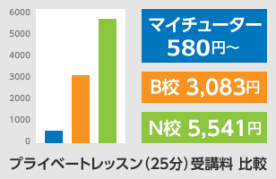

- POINT1
IELTSを熟知した講師陣
-
マイチューターでは、IELTSテストに熟知したインストラクターが常に社内研修で効果的な指導法をブラシュアップしております。

- POINT2
安心価格
-
驚きのコストパフォーマンスを実現

- POINT3
担任制 予約確保サービス
（同時に自由予約も可能です） -
全てが専門インストラクターとのプライベートレッスンです。取りずらい講師の予約もこちらで予約確保をするので計画的に受講できます。
- POINT4
短期集中でスコアアップ！
＜1日の受講時間制限なし＞ -
テストが1か月後に迫っていても大丈夫です。好きな時間に好きなだけ受講できるので短期スコアーアップが期待できます。

全ての講師がIELTSインストラクター
マイチューターに登録する講師全員がIELTS 指導に精通しており、効果的な指導法について常に活発な意見を交わしています。


IELTSインストラクターは「マイページ」からご予約いただけます。
Speaking スピーキング
IELTSスピーキングの特徴は、試験官との対面でやりとりするところです。テストでは、どの程度口頭でコミュニケーションできるかを判定されますが、出題トピックがある程度決まっており、対策をしっかりやることで最も高得点が期待できます。
マイチューターでは実際の出題形式に合わせて【Part 1】～【Part 3】全てに対応したレッスンをご用意しました。
- ◆
- 教材はレッスン毎に講師から渡されます。
- ◆
- 1レッスン（25分）で、Part 1 → Part 2 → Part 3 と進めていきます。
IELTSスピーキング特訓ゼミ
＜レッスンコース案内＞
▮初回のみ「講師への連絡」から英字表記をお伝えください。2回目以降は受講歴から順番に進めていきます。
▮IELTSスピーキング特訓ゼミ(英字：IELTS Speaking Mock Test)
●最大レッスン数：180レッスン（必要な分だけ受講してください）
●スピーキング（一つの技能）のスコアを0.5点上げるためには、およそ60～100レッスンが必要です。
レッスンの詳細
- 【Part 1】
類似問題形式トレーニング
本番同様、個人的な嗜好や一般的に関心の高いテーマについてそれぞれ3～４つほど質問に短く答えるトレーニングです。
- 【Part 2】
類似問題形式トレーニング
本番同様、受講者自身や日常生活についての質問に1～2分間話した後で関連した質問に答えるレッスンです。
- 【Part 3】
類似問題形式トレーニング
本番同様、Part 2のテーマに関連した講師とのディスカッションです。質問はより難しくなります。
IELTS Speaking Crash Course (バンドスコア 7+ 対策コース)
Crash Course は、IELTSスピーキングでバンドスコア 7以上を得点するために、採点基準の重要スキルを集中して学習する講座です。「スピーキング特訓ゼミ」が類似問題を使った総合学習カリキュラムであるのに比べ、Crash Courseでは、採点基準にある重要スキルを徹底して会得するカリキュラムになっています。
受講者が必要と思われるスキルを選んで受講してください。
◆教材はマイページ上部メニュー「オリジナル教材」からダウンロードできます。
IELTS Speaking Crash Course
＜レッスンコース案内＞
▮初回のみ「講師への連絡」から英字表記をお伝えください。2回目以降は受講歴から順番に進めていきます。
▮IELTSスピーキングCrash Course (英字：IELTS Speaking Crash Course)
●最大レッスン数：130レッスン（必要な分だけ受講してください）
▮IELTS スピーキング Useful Phrase Course
レッスンの詳細
- Speaking Discourse Marker （10レッスン）
「Fluency and coherence : 流暢さと首尾一貫性」で高い評価を得るために、ディスコース・マーカー（繋ぎ語）を適切に使って話に一貫性があることをアピールするカリキュラムです
- Speaking Topic Word （20レッスン）
受験者がトピック単語を使って回答しているかをチェックしています。例えば、環境問題について話をするとき、climate change, pollution levels などの単語がすらすら出てくることを期待しています。
- Speaking Grammar （20レッスン）
採点基準「文法の知識と正確さ」で高得点を狙うなら、多少のミスを犯してでも高度な文法（重文、複文など複雑な文構成）を使う必要があります。試験官に文法力をアピールするテクニックを学びます。
- Speaking Idiomatic Expression （20レッスン）
「Lexical Resource / Vocabulary 語彙の豊富さ」で高い評価を得るために、イディオムを積極的に使いましょう。単語だけ無難に使っていては、試験官から語彙力に疑問を持たれてしまいます。
- Collocation and Phrasal Verb （20レッスン）
採点基準「語彙の豊富さ」で高得点を狙うなら、正確にラクラクとCollocationを使いこなしましょう。Collocationとは言葉の中で慣用的に併用される定番の組み合わせです
- Speaking Paraphrasing （20レッスン）
同じ単語の繰り返しは「語彙力の貧弱さ」と判定されます。また、「話しぶりの流暢さ」では話を止めないことが大切になります。 「言い換え」「同義語」を使いこなすことで高得点を狙いましょう。
- Pronunciation （20レッスン）
試験官は、受験者がどの程度明快な英語を話し、聞き手に理解させることができるかを判定します。 発音、イントネーションは専門インストラクターから修正してもらいましょう。
Reading リーディング
Academic ModuleとGeneral Training Moduleでは試験内容が異なります。
違いは、出題される文章の種類です。Academic Moduleの文章の方が学術的で専門的な用語が多く、文体が複雑な点で、難易度が高いと言えます。
リーディングテストで試される能力とは、以下の2つです。
1) 速く読んで、答えとなる言葉を見つけ出す能力
2) 書かれている内容を理解し、質問に的確に答える能力
ここでは、実際の出題形式（Multiple-Choice, Short-Answerなど）を使い、適切な解答テクニックの選び方、使い方を練習 します。
レッスンの進め方
- ①
- オリエンテーション
初回は、IELTSリーディング攻略法とカリキュラムのオリエンテーションとなります。レッスンの最後に次回のレッスン教材（PDF）を受け取って終了となります。 - ②
- 予習（自習）
スカイプレッスンの前に受け取ったレッスン教材（問題）を全て解答してください（予習） - ③
- スカイプレッスン（設問の解き方）
スカイプレッスンでは講師と問題の答合わせ、設問の解き方、パッセージの重要ポイントや語彙に関するレッスンとなります。
Academic受講メニューはこちら »
General受講メニューはこちら »
IELTSリーディング特訓ゼミ
＜レッスンコース案内＞
▮初回のみ「講師への連絡」から英字表記をお伝えください。2回目以降は受講歴から順番に進めていきます。
▮IELTSリーディング特訓ゼミAcademic（英字: IELTS Reading Academic）
●オリジナル教材を使って解答テクニックを学びます（50レッスン）
▮IELTSリーディング特訓ゼミGeneral(IELTS Reading General) (33レッスン)
●オリジナル教材を使って解答テクニックを学びます（33レッスン）
▮IELTSリーディング過去問クラスAcademic（英字: IELTS Reading Past Exam Academic）
●過去問を使ったリーディングAcademic標準クラス（60レッスン）
●必要時間：１レッスン（３passages) = 1コマ(25分) または2コマ(50分)
▮IELTSリーディング過去問クラスGeneral（英字: IELTS Reading Past Exam General）
●過去問を使ったリーディングGeneral標準クラス（32レッスン）
●必要時間：１レッスン（３passages) = 1コマ(25分) または2コマ(50分)
レッスンの主なねらい
- 読解力 Reading Comprehensionn
基本的な読解力を鍛えるトレーニングです。パラグラフの構成やパッセージ全体の主題を読み取る力がつきます。
- テスト形式に慣れる Test Lay-out

Multiple-Choice, Summary-Completionなど実際に出題される様々な問題タイプを使った実践練習です。
- 読解テクニック Reading Method
スキミングやスキャニングなど読解テクニックを自由に使いこなす練習です。
- 時間管理 Time Management

850語くらいのパッセージを読み13～14問を20分で解くための時間管理力を養います。
Writing ライティング
Academic ModuleとGeneral Training Moduleでは試験内容が異なります。
それぞれTask 1 (最低語数150語、時間の目安20分)およびTask 2（最低語数250語、時間の目安40分）から構成されています。
| Task 1 | Academic | 図表やグラフで示されている情報についてレポートを作成する。 |
|---|---|---|
| General | 状況に応じて手紙を作成する。（手紙に含めるポイントを3つ提示される） | |
| Task 2 | Academic/ General |
与えられたトピックについてエッセイ（小論）を作成する。 |
マイチューターでは実際の出題形式に合わせて【Task 1-Academic】、【Task 1-General】、【Task 2-Academic / General】のレッスンをご用意しました。
- ◆
- 教材はレッスン毎に講師から渡されます。予習で必要な方は、レッスン時間に講師から受け取ってください。
- ◆
- 解答文文書ファイルとしてWord又はOpen Office Writer（無料）が必要です。
IELTSライティング特訓ゼミ
＜レッスンコース案内＞
▮初回のみ「講師への連絡」から英字表記をお伝えください。2回目以降は受講歴から順番に進めていきます。
▮IELTSライティング特訓ゼミAcademic (英字：IELTS Writing Academic)
●最大問題数：Task1 183問、Task 2 152問（必要な分だけ受講してください）
●標準必要時間：1問＝50分（2レッスン）1問を同じ講師で受講してください。
▮IELTSライティング特訓ゼミGeneral (英字：IELTS Writing General)
●最大問題数：Task1 45問（必要な分だけ受講してください）
●標準時間：1問＝50分（2レッスン）1問を同じ講師で受講してください。
- 【Task 1-Academic】
Task 1で出題される典型的なチャートや図形、模式図などを使い、データの概要、特徴を正確に書いて説明するトレーニングです。
- 【Task 2-Academic / General】
Task 2で出題される主なエッセイのタイプ５種類を分析し、よりよいエッセイを書くトレーニングです。
IELTS Writing Basic Course (初級者向け)
IELTS Writing Basic Courseは、IELTSの受験をしていない人、あるいは対策を始めたばかりの人に、ライティング スコア 5.0 を取得していただくカリキュラムです。
IELTS Writing試験の全体像を把握したうえで、ライティングの基礎からしっかりと学ぶことができます。 Task 1(図表などの分析とレポート)、Task 2(エッセイ)の基本的な回答法を会得するカリキュラムになります。
| Task 1 | 全20レッスン | 図表などの分析とレポート カリキュラム(Contents) |
|---|---|---|
| Task 2 | 全36レッスン | エッセイ カリキュラム(Contents) |
- ◆
- 教材はマイページ上部メニュー「オリジナル教材」からダウンロードできます。
IELTS Writing Basic Course
＜レッスンコース案内＞
▮初回のみ「講師への連絡」から英字表記をお伝えください。2回目以降は受講歴から順番に進めていきます。
▮IELTSライティング Basic Course (英字：IELTS Writing Basic Course)
●最大レッスン数：56レッスン（必要な分だけ受講してください）
IELTS Writing Crash Course (バンドスコア 7+ 対策コース)
Crash Course は、IELTSライティングでバンドスコア 7以上を得点するために、採点基準の重要スキルを集中して学習する講座です。「ライティング特訓ゼミ」が類似問題を使った総合学習カリキュラムであるのに比べ、Crash Courseでは、採点基準にある4つの重要スキルを徹底して会得するカリキュラムになっています。
IELTSライティングのスコア判定基準は以下４つあります。
● タスク達成度合い
● 首尾一貫性とつながり
● 語彙力
● 文法の知識と運用
受講者が必要と思われるスキルを選んで受講してください。
◆教材はマイページ上部メニュー「オリジナル教材」からダウンロードできます。
IELTS Writing Crash Course
＜レッスンコース案内＞
▮初回のみ「講師への連絡」から英字表記をお伝えください。2回目以降は受講歴から順番に進めていきます。
▮IELTSライティング Crash Course (英字： IELTS Writing Crash Course)
●最大レッスン数：95レッスン（必要な分だけ受講してください）
レッスンの詳細
- Writing Task Achievement （30レッスン）
Task1では、図表の主要な特徴や詳細をパラグラフを分けて主張できるようにします。
Taak2では、自分のアイディアをサポートしつつ例を挙げながらパラグラフを分けて主張できるようにするトレーニングです。
- Coherence and Cohesion （15レッスン）
情報とアイディアと言葉をうまく操ってエッセイをまとめる力、構文や文脈づくりで多様なテクニックが使われ、明快で滑らかな文を作る力を養います。
- Writing Vocabulary （20レッスン）
豊かな語彙をもって出題されたタスクのためにそれを適切かつ正確に使いこなす能力を磨くレッスンです。
- Writing Grammar （30レッスン）
多様な構文を、正確に適切に使いこなすトレーニングです。文法知識をいかして複雑な内容を盛り込んだ文章を書く能力が身に着きます。
Listening リスニング
IELTSリスニングは4つのセクションで構成されています。セクション1と3ではダイアログ（複数の話者による会話形式）、セクション2と4がモノローグ（1人の話者が講義のように話すトーク形式）となっています。
社会・生活場面から学術・教育場面まで幅広い範囲で学習する必要があります。 とはいえ、常に決まったテーマ・問題形式なので、過去問の徹底学習で短期間にスコアアップがねらえます。
マイチューターでは、65レッスン分の過去問レッスンをご用意しました。
音声を聞き、解答した後で、講師がAnswer Keyと 弱点克服のアドバイス・指導を行います。
レッスンの流れ
- ➀
- 問題用紙（Question）を講師が共有画面に写します。
- ②
- 問題用紙を見ながら音声を聞き質問に答えます。
- ③
- 答え合わせをして、Note-taking、Answer Keyなどの指導を受けます。
- ④
- ご希望があれば、当日分の教材とスクリプトを講師から受け取って終了となります。
ELTSリスニング過去問特訓ゼミ
＜レッスンコース案内＞
▮初回のみ「講師への連絡」から英字表記をお伝えください。2回目以降は受講歴から順番に進めていきます。
▮リスニング過去問特訓ゼミ (英字：IELTS Listening Past Exam)
●最大レッスン数：65レッスン（必要な分だけ受講してください）
受講者の声

- 30代 大学院生 俊輔さま
-
試験と同様のトピックの授業に惹かれ、受講を決めました。
レッスンでは自分の弱点、苦手なところなどを重点的にみてもらえたので、効率的に学習ができました。
入会時に5.5だったバンドが2ヶ月で6.0に上昇し、4ヶ月目で目標の7.0を達成できました。私は、スピーキングとライティングを同時進行で受講させていただきましたが、オリジナル受講メニューだけでなく、ケンブリッジからでている公式問題集などもレッスンで利用していただきました。
私のレベルに合わせ徐々にレベルアップを考えたレッスンをしていただけたようで講師の方々には大変感謝しています。ほぼ毎日、多いときは3時間くらい受講したおかげで本番では自信を持って臨めました。
最終的に講師を2名に絞りましたが、受講した先生はみんなIELTSをよく知っていてレベルの高い先生ばかりでした。
以前通っていたスクールに比べ受講料も10分の1位でしたので、料金を気にせず思う存分レッスンを受けられました。
1日の受講数に制限がないシステムも短期で目標を達成できた要因でしょう。リーディングはある程度独学でスコアが上がっていましたが、時間内で回答ができないことが多く、読解テクニックを学ぶ必要からマイチューターさんの「IELTSリーディング特訓ゼミ」も受講しました。 先にスピーキングとライティング特訓ゼミを受講していたこともあり6.0から7.0にスコアアップするのにも3ヶ月もかかりませんでした。
現在、ロンドンの大学院でMBAプログラムを勉強していますが、学生仲間と自然に会話ができるのもマイチューターでのプライベートレッスンで鍛えられたお蔭だと思います。
- 20代 学生 尚美さま
-
以前IELTSの専門学校でグループレッスンを受講していたのですが特にスピーキングはグループレッスンでは限界を感じていました。
しかしながら、プライベートでは予算が合わず半ば諦めかけていました。格安でプライベートレッスンが受けられるオンライン英会話の選択もありましたが、何度か体験レッスンを受けたところは講師がIELTSをよく知らずに教えている感じで私が講師に教えることも多々あり。信頼できる感じではありませんでした。
そんな時に、IELTSを勉強している仲間に紹介されたのがマイチューターさんでした。こちらのオンラインスクールは格安なのに講師がしっかりしていて、IELTSの専門インストラクターが大勢在籍しているので毎日2時間近く受講することができました。
レッスンは実践的な問題が中心で、先生は私の弱点や気づいたことをどんどん修正してくださいます。先生が信頼できたので、私も間違えても臆することなく、積極的にしゃべり続けました。 先生は言葉で指摘するだけでなく、チャットボックスを使い語彙の修正や文法の間違えをタイプしてくれるのでレッスン後の復習に大変役立ちました。
なんとなくわかった修正点を次回のレッスンから積極的に使い続けることで自分のものになっていきました。受講前はスピーキングが苦手な私でしたが、約3ヶ月でバンドが5.0から6.5まで飛躍的にアップして自分でも驚いています。
スピーキングに苦手意識が消えた今、IELTSライティング特訓ゼミを受講しています。
こちらもスピーキング同様、レッスン毎に実力が付いていることを実感しています。
アンケートモニター提供元：ゼネラルリサーチ
調査期間： 2021年1月22日～23日
調査方法：インターネット調査
調査概要：オンライン英会話10社を対象にしたサイト比較イメージ調査
調査対象：全国の20代～50代の男女1017名